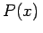
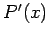
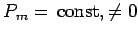

Inhalt Index DeskTop Bronstein

 Arithmetik Algebraische und transzendente Gleichungen Gleichungen n-ten Grades Gleichungen mit reellen Koeffizienten
Arithmetik Algebraische und transzendente Gleichungen Gleichungen n-ten Grades Gleichungen mit reellen Koeffizienten


Aus den Darlegungen im voranstehenden Abschnitt Komplexe Wurzeln folgt, daß jede Gleichung ungeraden Grades mindestens eine reelle Wurzel besitzt. Die Anzahl weiterer reeller Wurzeln der Gleichung (1.165a) zwischen zwei beliebigen reellen Zahlen a und b, wobei a < b ist, kann folgendermaßen bestimmt werden:
Hier ist P(x) die linke Seite der gegebenen Funktion, P'(x) ist die erste Ableitung von , P1(x) der Rest der Division von P(x) durch , aber genommen mit entgegengesetztem Vorzeichen, P2(x) der ebenfalls mit entgegengesetztem Vorzeichen genommene Rest der Division von P'(x) durch P1(x) usw.;  ist der letzte, aber konstante Rest. Zur Vereinfachung der Rechnung kann man die gefundenen Reste mit konstanten positiven Faktoren multiplizieren, ohne daß sich das Ergebnis ändert.
| Beispiel |
|
Für die Gleichung x4-5x2+8x-8 = 0 ist die Anzahl der Wurzeln im Intervall [0,2] zu bestimmen. |
| Beispiel |
|
Was kann über die Wurzeln der Gleichung x4 + 2x3 - x2 + 5x - 1 = 0 ausgesagt werden? |